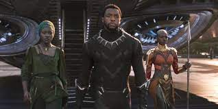
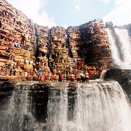
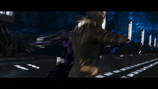

plot

Centuries ago, as five African tribes war over a meteorite made up of the alien metal
vibranium,
a warrior shaman Bashenga ingests a Heart-Shaped Herb affected by the metal and gains superhuman abilities.
Becoming the first "Black Panther", he unites all tribes except the Jabari tribe, and forms the nation of Wakanda. As time
passes, the Wakandans use the vibranium to develop highly-advanced technology while simultaneously isolating themselves from
the rest of the world and posing as a third world country.
In 1992, King T'Chaka visits his brother N'Jobu, who is working undercover in Oakland,
California. T'Chaka accuses N'Jobu of assisting black-market arms dealer Ulysses Klaue
in stealing vibranium from Wakanda. N'Jobu's partner reveals he is Zuri, another undercover Wakandan, and confirms T'Chaka's suspicions.

In the present day ,T'Challa returns to Wakanda to asume the throne after one week
following T'Chaka's death at the hands of Helmut Zemo, after working with Okoye, the leader of the
Dora Milaje, to extract his ex-lover Nakia from an undercover assignment in Nigeria's Sambisa Forest, he
reunites with his mother, Queen Ramonda, and sister, Princess Shuri.
Later at the ceremony, to formally induct him as the king, T'Challa drinks
a liquid that removes his enhanced strength and formally invites anyone to challenge his claim as king in ritual combat. The challenger to step
forward is M'Baku, the leader of the mountain-dwelling Jabari Tribe, who claims that T'Challa is not worthy of being king. The two engage in ritual
combat, and even without his strength, T'Challa manages to best him and spares his life. T'Challa is crowned the new King and drinks a fluid derived
from the heart-shaped herb. As his body digests the herb T'Challa goes into a deep sleep where he visits the Ancestral Plane and reunites with a vision
of his father who advises him he is a good man but also warns him that he has hard times ahead and should surround himself with people he trusts. With
this T'Challa wakes up from his dream.

At the same time, Klaue and his associate Erik Stevens steal a Vibranium artifact from the
Museum of Great Britain. When Wakanda hears of Klaue's actions, T'Challa's friend and Okoye's lover W'Kabi, who lost his parents as a result of the dealer's
actions, urges the young monarch to bring him to justice. T'Challa, Okoye, and Nakia plan to intercept Klaue at an underground casino in Busan, where he will
be selling a stolen artifact to an unknown buyer. The plan, however, goes wrong when T'Challa discovers the buyer is CIA agent Everett Ross. As a result, the
Dora Milaje are forced to sabotage the

Meanwhile, Killmonger kills Klaue and takes his body to Wakanda, revealing his identity
before the tribal elders and challenging T'Challa for the throne in ritual combat. Deciding Killmonger has a legitimate claim, the ritual combat begins with
While Shuri, Nakia, and Okoye join the Dora Milaje and Jabari in battling W'Kabi and the Wakandan army, Ross, piloting a remote jet, shoots down the planes carrying
the weapons before they can leave the country. Confronted by Okoye, W'Kabi and his army stand down. Killmonger overpowers the Dora Milaje and comes close to
murdering Shuri, but T'Challa saves her and tackles Killmonger into the Great Mound. M'Baku and the Jabari arrive, and they defeat W'Kabi, forcing the Border
Tribe to surrender.
While T'Challa and Killmonger vie for supremacy, sonic disruptors used in the transport of the metal in the mine incapacitate their vibranium armors. T'Challa
uses this to his advantage, and overpowers Killmonger, impaling him with a dagger. T'Challa, victorious, shows mercy to Killmonger and fulfills his childhood
wish to witness the sunset of Wakanda. Killmonger refuses T'Challa's offer to be healed and pulls the dagger out of his chest, choosing to die a free man rather
than be incarcerated.
Rejecting the isolationism of past Wakandan kings, T'Challa establishes an embassy in Oakland, California, purchasing the apartment complex where N'Jobu was
murdered. T'Challa appoints Shuri and Nakia to run the embassy. Soon after, T'Challa appears before the United Nations in the rebuilt Vienna International Centre
to reveal Wakanda's resources to the world, and to come out of isolation. Later, Bucky Barnes who was granted asylum by T'Challa wakes up in Wakanda, and is met
by Shuri, who begins to help him with his recuperation from his mental programming.